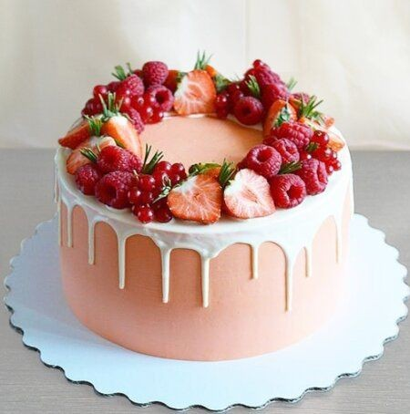
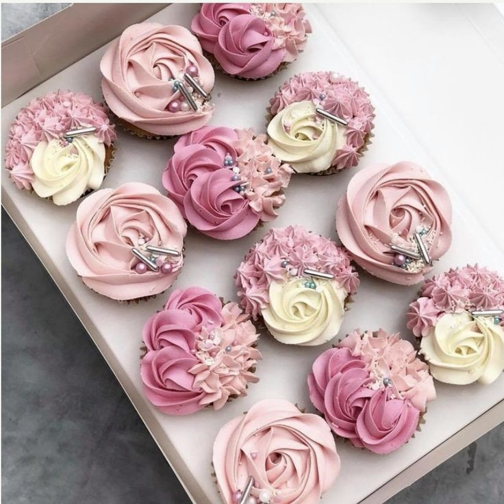
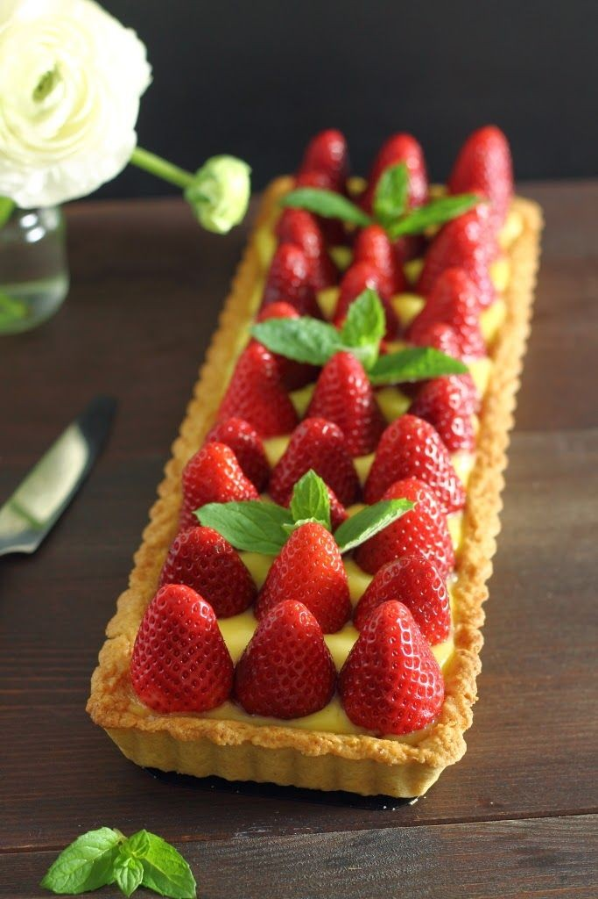

Viola Bakery didirikan sejak tahun 2003 berlokasi di Kota Purworejo, Jawa Tengah. Bahan yang digunakan adalah bahan terbaik yang diperoleh dari proses pembuatan prabrik sendiri. Kue sangat lembut dan mempunyai cita rasayang khas. Bentuk yang menarik dan enak dipandang oleh
|  |  |  |